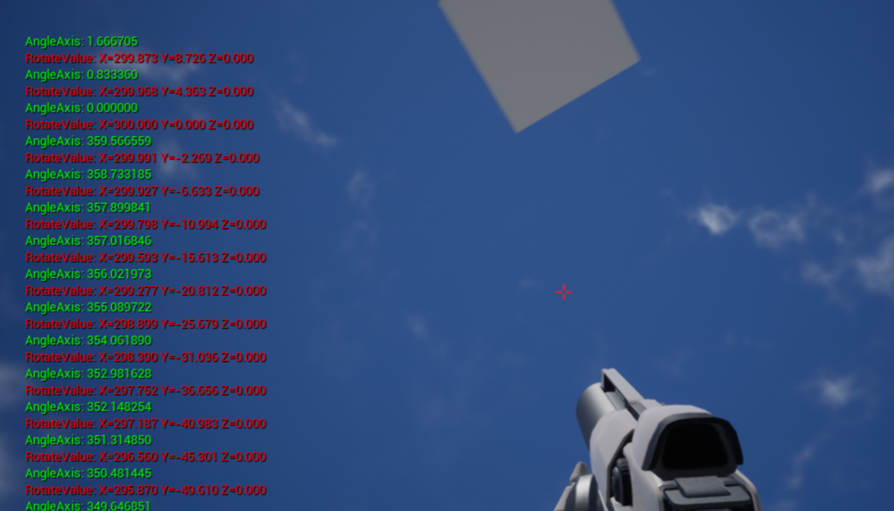

26. 绕轴旋转
接上一节教程，在本教程中，我们将学习如何使用 RotateAngleAxis 函数。首先创建一个新的 C++ Actor 类，并将其命名为 RotateAngleAxis 。在头文件中，我们将创建两个浮点变量和两个 FVector 变量，并将它们设置为 EditAnywhere，以便稍后在编辑器中编辑它们。
下面是最终的头文件代码。
RotateAngleAxis.h
#pragma once
#include "CoreMinimal.h"
#include "GameFramework/Actor.h"
#include "RotatingAngleAxis.generated.h"
UCLASS()
class UNREALCPP_API ARotatingAngleAxis : public AActor
{
GENERATED_BODY()
public:
// Sets default values for this actor's properties
ARotatingAngleAxis();
protected:
// Called when the game starts or when spawned
virtual void BeginPlay() override;
public:
// Called every frame
virtual void Tick(float DeltaTime) override;
// declare our float variables
UPROPERTY(EditAnywhere, Category = Movement)
float AngleAxis;
UPROPERTY(EditAnywhere, Category = Movement)
FVector Dimensions;
UPROPERTY(EditAnywhere, Category = Movement)
FVector AxisVector;
UPROPERTY(EditAnywhere, Category = Movement)
float Multiplier;
};
在 .cpp 中，让我们首先为 actor 设置一些默认值。
// Sets default values
ARotatingAngleAxis::ARotatingAngleAxis()
{
// Set this actor to call Tick() every frame. You can turn this off to improve performance if you don't need it.
PrimaryActorTick.bCanEverTick = true;
Dimensions = FVector (300, 0, 0); ///< 旋转半径
AxisVector = FVector (0, 0, 1);
Multiplier = 50.f;
}
我们所有的逻辑都在 Tick 函数中。在这个例子中，我们将使用一个固定的矢量点，所以每一帧我们都想通过将 NewLocation 设为固定的 FVector 来初始化我们的固定位置。
接下来，我们想要添加到 AngleAxis 变量中，该变量将指示 actor 应该旋转的角度。我们添加了 DeltaTime 乘以我们的 Multiplier 来平滑移动。如果 AngleAxis 大于或等于 360，我们将 AngleAxis 重置为 0。
接下来，我们将通过使用 RotateAngleAxis 函数从 Dimensions 位置（以它为半径旋转）来设置 RotateValue。
这会返回将 actor 移动到下一个位置所需的单位数量。
将 RotateValue 的 X、Y 和 Z 值相应地添加到 NewLocation 变量中。
我们将把 RotateValue 和 AngleAxis 变量打印到屏幕上，以便实时查看这些值。
最后，用 SetActorLocation 将角色的位置设置为 NewLocation 。
FVector RotateAngleAxis
(
const float AngleDeg, ///< 旋转的角度
const FVector & Axis ///< 围绕的旋转轴
)
Tick 函数的定义
// Called every frame
void ARotatingAngleAxis::Tick(float DeltaTime)
{
Super::Tick(DeltaTime);
FVector NewLocation = FVector (0,0,800);
AngleAxis += DeltaTime * Multiplier;
if(AngleAxis >= 360.0f)
{
AngleAxis = 0;
}
FVector RotateValue = Dimensions.RotateAngleAxis(AngleAxis, AxisVector);
GEngine->AddOnScreenDebugMessage(-1, 5.f, FColor::Red, FString::Printf(TEXT("RotateValue: %s"), *RotateValue.ToString()));
GEngine->AddOnScreenDebugMessage(-1, 5.f, FColor::Green, FString::Printf(TEXT("AngleAxis: %f"), AngleAxis));
NewLocation.X += RotateValue.X;
NewLocation.Y += RotateValue.Y;
NewLocation.Z += RotateValue.Z;
SetActorLocation(NewLocation, false, 0, ETeleportType::None);
}
完整的 cpp 代码如下：
#include "RotatingAngleAxis.h"
// Sets default values
ARotatingAngleAxis::ARotatingAngleAxis()
{
// Set this actor to call Tick() every frame. You can turn this off to improve performance if you don't need it.
PrimaryActorTick.bCanEverTick = true;
Dimensions = FVector (300, 0, 0);
AxisVector = FVector (0, 0, 1);
Multiplier = 50.f;
}
// Called when the game starts or when spawned
void ARotatingAngleAxis::BeginPlay()
{
Super::BeginPlay();
}
// Called every frame
void ARotatingAngleAxis::Tick(float DeltaTime)
{
Super::Tick(DeltaTime);
FVector NewLocation = FVector (0,0,800);
AngleAxis += DeltaTime * Multiplier;
if(AngleAxis >= 360.0f)
{
AngleAxis = 0;
}
FVector myCharacter = GetWorld()->GetFirstPlayerController()->GetPawn()->GetActorLocation();
FVector RotateValue = Dimensions.RotateAngleAxis(AngleAxis, AxisVector);
GEngine->AddOnScreenDebugMessage(-1, 5.f, FColor::Red, FString::Printf(TEXT("RotateValue: %s"), *RotateValue.ToString()));
GEngine->AddOnScreenDebugMessage(-1, 5.f, FColor::Green, FString::Printf(TEXT("AngleAxis: %f"), AngleAxis));
NewLocation.X += RotateValue.X;
NewLocation.Y += RotateValue.Y;
NewLocation.Z += RotateValue.Z;
/// @note 仅公转
///SetActorLocation(NewLocation, false, 0, ETeleportType::None);
/// @note 公转的同时还会绕自转
FRotator NewRotation = FRotator(0, AngleAxis, 0); ///< pitch, yaw, roll
FQuat QuatRotation = FQuat(NewRotation);
SetActorLocationAndRotation(NewLocation, QuatRotation, false, 0, ETeleportType::None); ///< 立即移动 actor 到指定的位置并旋转。
}
编译代码。将新 actor 拖放到游戏世界中。向 actor 添加一个静态网格组件（比如立方体）。当你按下 play 时，actor 会找到并绕着给定的矢量点旋转。。
运行效果如下：
